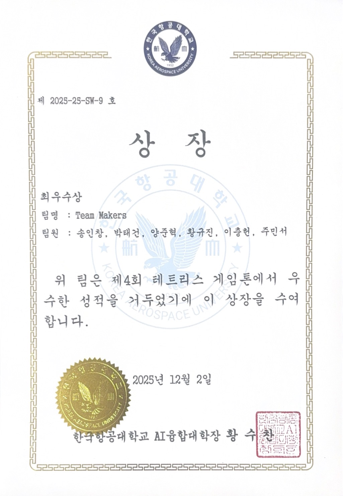

2025.12
제4회 교내 테트리스 게임톤 최우수상
한국항공대학교 · Team Makers / Titanomachia
I THINK. I BUILD.
게임의 세계를 상상하는 것에서 멈추지 않고, 플레이어의 움직임과 시스템을 설계해 직접 구현합니다. 게임 기획과 소프트웨어 개발 사이를 오가는 박태건입니다.
가장 많은 고민을 담았던 작업부터 차례로 꺼내 보았습니다. 카드를 클릭하면 세부 기록을 볼 수 있어요.
GAME PLANNER / SOFTWARE DEVELOPER
“좋은 아이디어는 플레이어가 직접 경험할 수 있을 때 비로소 완성된다고 믿습니다.”
소프트웨어를 공부하면서 자연스럽게 시스템을 만드는 즐거움을 배웠습니다. 그리고 팀 게임을 제작하면서, 코드 한 줄과 맵의 작은 배치가 플레이어의 감정과 선택을 얼마나 크게 바꿀 수 있는지 알게 되었습니다.
게임의 스토리·연출·레벨 디자인을 기획하고, Unity와 웹 기술로 실제 움직이는 형태까지 구현합니다. 서로 다른 의견을 모아 실험 가능한 형태로 만드는 협업을 중요하게 생각합니다.
수상, 연구, 어학·자격을 연월과 함께 남겼습니다.
획득 기록과 진행 중인 이력은 구분했습니다.
한국항공대학교 · Team Makers / Titanomachia
IICCC 2026 학술대회 논문 등록 · 공동저자
논문 등록 기록으로, 수상 실적과 구분합니다.한국·일본 팀 협업 · Paved Clouds 배포 서비스 기획·개발
클라우드 앱 배포 문제를 해결하는 팀 프로젝트 참가
실시간 데이터와 셀룰러 오토마타를 활용한 미디어 아트 연구 및 구현
6인 협업 게임 제작·교내 최우수상·차기 작품 개발
고체연료 모형 로켓 제작·발사, 야구부 훈련 활동
함께 재미있는 문제를 정의하고, 직접 플레이할 수 있는 결과로 만들어 가고 싶습니다.

한국항공대학교 제4회 테트리스 게임톤 · 2025.12.02